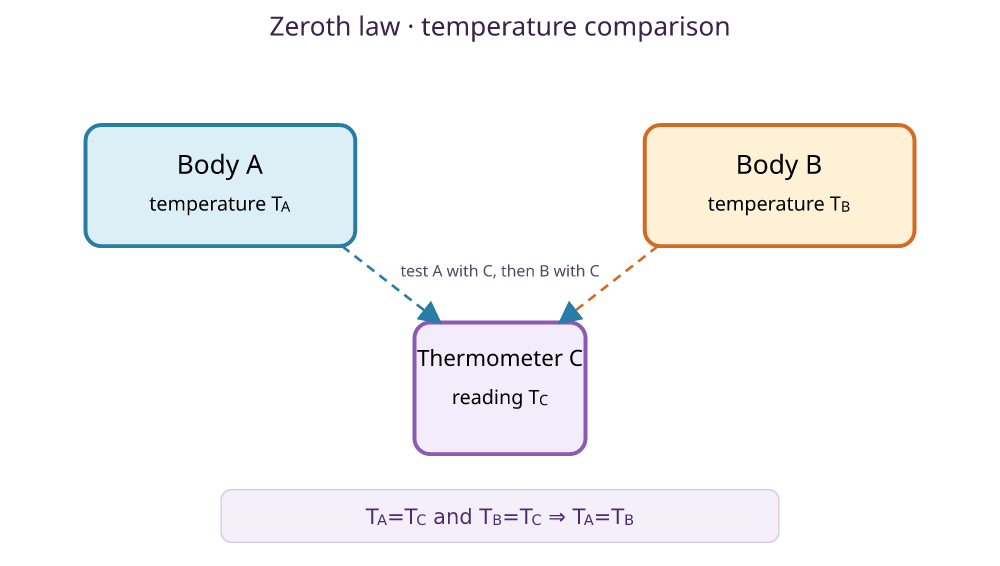
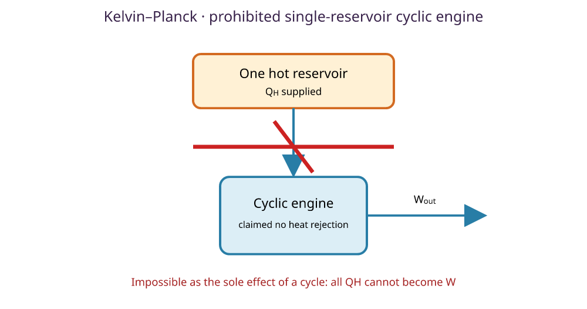
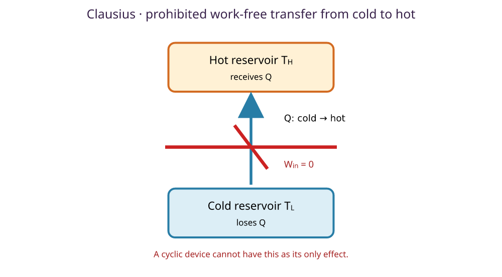
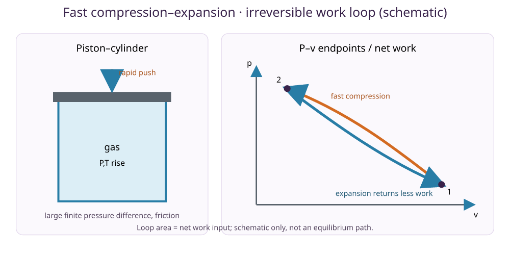
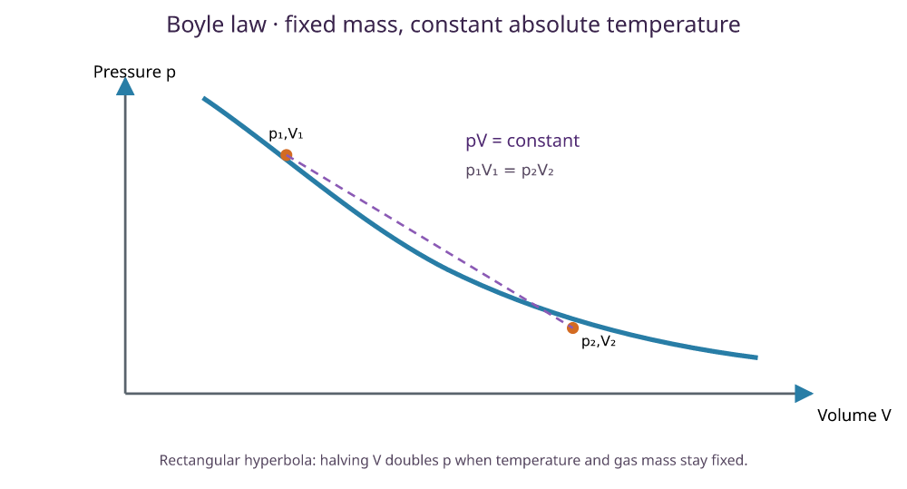
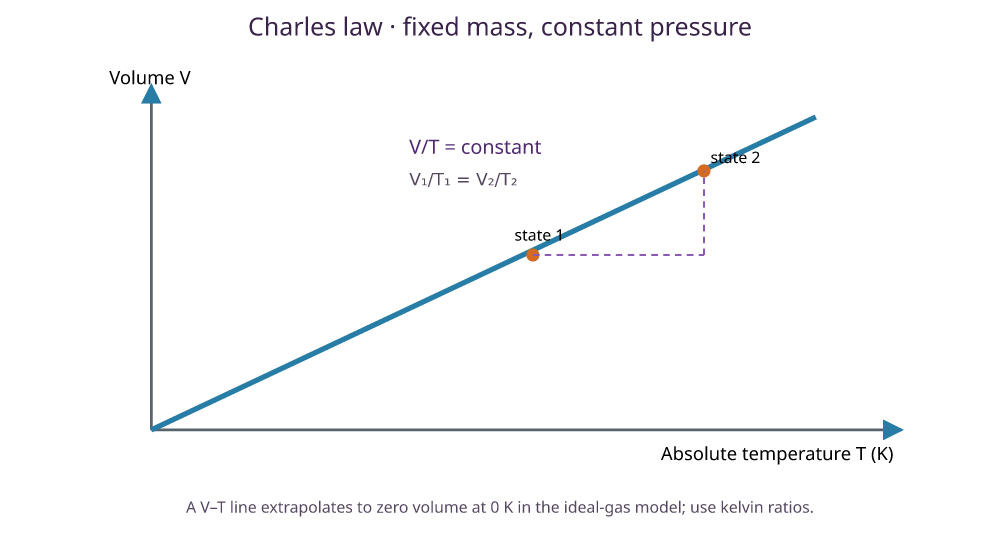
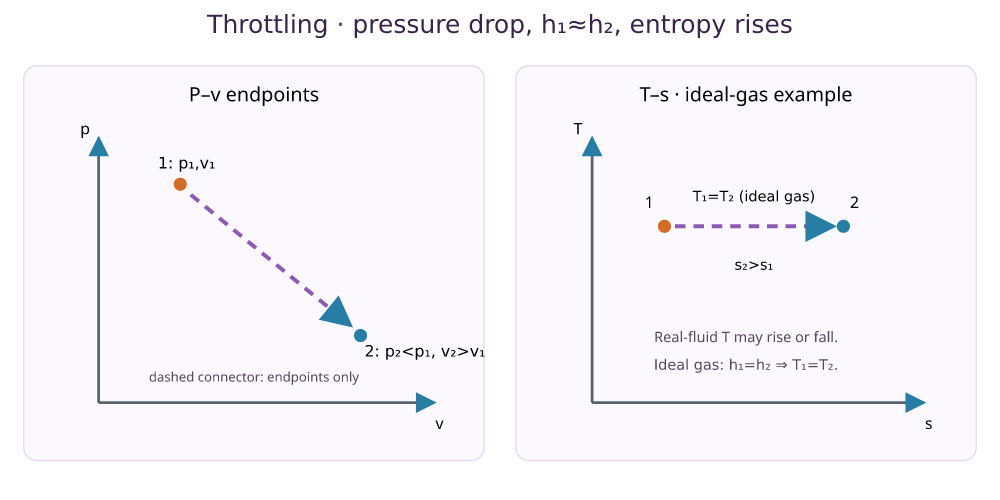

Updated supplied study solution — English only. આ નવો આપેલો ઉકેલ માત્ર અંગ્રેજીમાં છે; ભાષા બદલવાથી જવાબોનું ભાષાંતર થતું નથી. Unofficial model answers, not a GTU marking scheme; answers have not been independently verified.
The original Winter 2025 question PDF was not found in the supplied Drive files. This reader preserves the Winter questions and answers from the combined source HTML; the Summer PDF is not linked to this exam.
Engineering Thermodynamics
All five printed questions, every subpart and both complete OR alternatives are represented. For exam practice, answer all common parts and one complete branch where OR is printed.
The supplied GTU paper identifies its English version as authentic. Prompts follow the source with minor wording normalisation for clarity; all printed numerical data, marks and OR choices are preserved.
Question 1
Printed English wording, marks and worked study answers
Q1(a)Classify thermodynamics system according to transfer of energy and mass.3 marks
Worked study answer · 3 marks
Thermodynamic systems are classified by what crosses their boundary:
| System | Mass transfer | Energy transfer (heat/work) | Example |
|---|---|---|---|
| Open (control volume) | Yes | May occur | Operating turbine, compressor or nozzle |
| Closed (control mass) | No; fixed mass | May occur | Gas in a sealed piston–cylinder |
| Isolated | No | No | Idealised rigid, perfectly insulated sealed vessel |
“Isolated” is the limiting case of a closed system with no heat or work crossing the boundary. A closed-system boundary can move, allowing boundary work, but cannot pass matter.
Q1(b)Differentiate Path function and point function.4 marks
Worked study answer · 4 marks
| Point (state) function | Path function |
|---|---|
| Property determined by the state alone. | Energy transfer whose value depends on the process followed. |
| Change depends only on end states; cyclic integral is zero. | Integral generally depends on the path; cyclic integral need not be zero. |
| Exact differential, e.g. dU, dH, dS. | Inexact differential, written δQ and δW. |
| Examples: pressure, temperature, specific volume, internal energy. | Examples: heat Q and work W. |
Heat and work are not stored in a system; they describe energy crossing its boundary during a process.
Q1(c)Write definition of heat and work and also write five points of equality between them.7 marks
Worked study answer · 7 marks
Heat (Q): energy transferred across a system boundary solely because of a temperature difference. Heat flows spontaneously from higher to lower temperature.
Work (W): energy transferred across the boundary by an organised interaction other than heat, such as a force acting through a displacement or a rotating shaft crossing a control surface.
Five similarities:
- Both are modes of energy transfer across the boundary, not properties stored in the system.
- Both occur only during a process; a system is described as having energy, not “heat” or “work”.
- Both are boundary phenomena and their amount depends on the process path.
- Both are measured in joules (or kJ); their rates are watts (or kW).
- Both can produce the same change in a system’s energy and can be converted from one transfer mode to the other (for example, paddle-wheel work raises water’s internal energy).
With the convention used here, heat into the system and work done by the system are positive; keep the sign convention consistent in balances.
Q1(c) — ORExplain Zeroth law of thermodynamics with its applicability using neat sketch.7 marks
Worked study answer · 7 marks
Statement: If two systems A and B are each in thermal equilibrium with a third system C, then A and B are in thermal equilibrium with each other.
Thermal equilibrium means no net heat transfer when the bodies are placed in thermal contact; their temperatures are equal. If TA=TC and TB=TC, then TA=TB.
Applicability — thermometry: Let C be a calibrated thermometer. Bring it to thermal equilibrium with A and record its stable reading; repeat with B. Equal readings imply A and B have the same temperature, and when placed together they exchange no net heat. This provides the logical basis for measuring temperature and constructing a temperature scale. A thermometer must be allowed to settle and should not appreciably disturb the body.

Question 2
Printed English wording, marks and worked study answers
Q2(a)What is a perpetual motion machine of the first kind (PMM-1)? Write relative statement of corollary of the First Law of Thermodynamics.3 marks
Worked study answer · 3 marks
A PMM-1 is a hypothetical device that delivers net work continuously without an equivalent energy input, or creates energy from nothing. It violates the first law and cannot exist.
Corollary: Energy cannot be created or destroyed, only transferred or transformed. For a closed system, ΔE = Q − W (with Q positive in and W positive out); over a complete cycle ΔE=0, so net heat supplied = net work delivered. All energy forms and transfers must be included.
Q2(b)Write the simplified form of the steady flow energy equation for a steam turbine and explain the meaning of each term.4 marks
Worked study answer · 4 marks
For one inlet and one outlet at steady flow, using heat into the turbine and shaft work out as positive:
For an approximately adiabatic turbine with negligible kinetic- and potential-energy changes:
Here q is heat transfer per unit mass (kJ/kg), ws,out is shaft work output per unit mass (kJ/kg), h is specific enthalpy (kJ/kg), V is velocity (m/s), z is elevation (m), g is gravitational acceleration (m/s²), and ṁ is mass-flow rate (kg/s). If heat loss or changes in V or z matter, retain the corresponding terms; do not assume every turbine is adiabatic.

Q2(c)In a gas turbine, air enters with velocity 200 m/s and enthalpy 6699 kJ/kg at 4.5 kg/s. At the outlet, velocity is 150 m/s and enthalpy is 5460 kJ/kg. If 50.4 kJ/kg of heat is rejected to the surroundings, determine the turbine power developed.7 marks
Worked study answer · 7 marks
Given: ṁ=4.5 kg/s; h₁=6699, h₂=5460 kJ/kg; V₁=200, V₂=150 m/s; q=−50.4 kJ/kg (heat rejected). Assume steady, one-inlet/one-outlet flow and negligible elevation change.
- SFEE per kg, with shaft work positive out: wout = q + (h₁−h₂) + (V₁²−V₂²)/2000. The divisor 2000 converts a velocity-squared difference in m²/s² to kJ/kg.
- Enthalpy contribution: 6699−5460=1239 kJ/kg.
- Kinetic-energy contribution: (200²−150²)/2000 = 8.75 kJ/kg.
- wout=−50.4+1239+8.75=1197.35 kJ/kg.
- Pout=ṁwout=4.5(1197.35)=5388.1 kW ≈ 5.388 MW.
The heat loss reduces output by 50.4 kJ/kg; it is entered once as negative q.
Q2(a) — ORWrite the four conditions for steady flow.3 marks
Worked study answer · 3 marks
- Mass and energy stored within the control volume do not change with time.
- At every fixed location, flow properties (pressure, temperature, velocity, etc.) are time-independent.
- Mass-flow rates and heat/work interaction rates are steady in time.
- Mass conservation is satisfied: for a single inlet and outlet, ṁin=ṁout; for several ports, total inflow equals total outflow.
Steady does not mean inlet and outlet properties are equal; they may differ while each remains constant in time.
Q2(b) — ORWrite name of five engineering equipment for which steady flow energy equation can be utilized.4 marks
Worked study answer · 4 marks
Five examples of steady-flow equipment analysed with SFEE are:
- Nozzle
- Steam or gas turbine
- Compressor
- Pump
- Boiler
Other examples include diffusers, condensers, heat exchangers, throttling valves and mixing chambers. The appropriate SFEE terms are retained or neglected according to each device’s operation.
Q2(c) — ORA fluid passes through a horizontal nozzle. At inlet h₁=3000 kJ/kg and V₁=50 m/s; outlet h₂=2700 kJ/kg. Neglect nozzle heat loss and find exit velocity using SFEE.7 marks
Worked study answer · 7 marks
Assumptions: steady one-dimensional flow; adiabatic nozzle; no shaft work; horizontal (Δz=0); uniform inlet/outlet states.
- SFEE reduces to h₁+V₁²/2000=h₂+V₂²/2000, where h is kJ/kg and V is m/s.
- Rearrange: V₂²=V₁²+2000(h₁−h₂).
- Substitute: V₂²=50²+2000(3000−2700)=2500+600000=602500 m²/s².
- V₂=√602500=776.21 m/s.
The enthalpy drop appears as increased jet kinetic energy; the exit speed is much greater than the inlet speed.
Question 3
Printed English wording, marks and worked study answers
Q3(a)Write the formulas for (1) COP of a refrigerator (2) COP of a heat pump (3) Entropy.3 marks
Worked study answer · 3 marks
COPHP = QH/Win = COPR + 1
For a cyclic refrigerator/heat pump, QH=QL+Win, and heat quantities are positive magnitudes. For entropy, the defining reversible differential relation is:
Entropy S is a property; units are J/K (specific entropy: J/(kg·K)). For an irreversible process, entropy generation is non-negative; do not generally replace δQ by δQrev with the actual irreversible heat transfer.
Q3(b)Write Kelvin–Planck’s statement of the Second Law of Thermodynamics and explain it with the help of a diagram.4 marks
Worked study answer · 4 marks
Statement: No device operating in a cycle can have as its sole effect the absorption of heat from a single thermal reservoir and the conversion of that heat completely into work.
A cyclic heat engine must reject some heat to a colder sink; thus its thermal efficiency is less than 100%. This does not forbid a non-cyclic process from converting energy while the system changes state, nor does it forbid work being dissipated as internal energy. The words cyclic and sole effect are essential.

Q3(c)What is irreversibility? Write its types. List the factors that make a process irreversible.7 marks
Worked study answer · 7 marks
Irreversibility is the inability to reverse a real process so that both the system and surroundings are restored exactly to their initial states with no other effect. Irreversibility is associated with entropy generation.
Types: (i) internal irreversibility, caused within the system (viscous flow, friction, mixing, chemical reaction); (ii) external irreversibility, caused by interactions across the boundary or in the surroundings (for example, heat transfer through a finite temperature difference or friction at a boundary). A real process can involve both.
Common causes/factors:
- Mechanical friction, viscous shear and turbulence
- Heat transfer across a finite temperature difference
- Unrestrained/free expansion and pressure equalisation through finite differences
- Mixing of different substances or streams
- Electrical resistance and Joule heating
- Inelastic deformation, impact and hysteresis
- Combustion or other chemical reactions away from equilibrium
These effects generate entropy; a reversible idealisation requires their absence and quasi-static transfer through infinitesimal driving differences.
Q3(a) — ORWrite the difference between a refrigerator and a heat pump.3 marks
Worked study answer · 3 marks
| Refrigerator | Heat pump |
|---|---|
| Desired effect is heat removal QL from a cold space (cooling). | Desired effect is heat delivery QH to a warm space (heating). |
| Performance measure: COPR=QL/Win. | Performance measure: COPHP=QH/Win. |
| Rejects heat QH to surroundings. | Absorbs heat QL from surroundings. |
They can be the same reversed cycle viewed for different purposes: QH=QL+Win, hence COPHP=COPR+1.
Q3(b) — ORState the Clausius statement of the Second Law of Thermodynamics and explain it with a diagram.4 marks
Worked study answer · 4 marks
Statement: No device operating in a cycle can have as its sole effect the transfer of heat from a colder body to a hotter body.
A refrigerator can move heat from cold to hot only by receiving work (or having another compensating effect). The electrical work supplied to an ordinary refrigerator is why it does not violate Clausius. In the ideal prohibited case shown, no work is supplied and the sole effect would be cold-to-hot heat transfer.

Q3(c) — ORWrite the names of any five irreversible processes and describe the fast compression–expansion process with a diagram.7 marks
Worked study answer · 7 marks
Examples (any five): free expansion of a gas; heat transfer across a finite temperature difference; flow with friction/turbulence; mixing of different gases; electrical resistance heating; inelastic impact; combustion.
Fast compression–expansion: A piston compressing gas rapidly creates finite pressure differences and strong non-equilibrium gradients. The compression is not a succession of equilibrium states; work must be supplied against the gas pressure and dissipative effects. If the gas is then allowed to expand rapidly back, friction, turbulence and other entropy-generating effects prevent complete recovery of that input work. The return path differs from the compression path, so the net cycle requires work input.
The schematic P–v loop shows the compression branch above the expansion return: area between the branches represents net work input for the indicated cycle. Rapid does not by itself prove adiabatic; heat transfer may be neglected only if the duration and insulation justify it. The sketch is qualitative because an actual fast non-equilibrium process has no unique equilibrium P–v path at every instant.

Question 4
Printed English wording, marks and worked study answers
Q4(a)State Boyle’s law and explain it.3 marks
Worked study answer · 3 marks
For a fixed mass of gas at constant absolute temperature, the pressure is inversely proportional to volume:
Reducing volume by half doubles pressure under these conditions. The P–V graph is a rectangular hyperbola. Boyle’s law is an ideal-gas relation (or a useful low-density approximation for a real gas).

Q4(b)State the characteristic equation of a gas and indicate the units of each term.4 marks
Worked study answer · 4 marks
The characteristic (ideal-gas) equation for a fixed mass is:
- p: absolute pressure, Pa; V: total volume, m³.
- m: mass, kg; T: absolute temperature, K.
- R: specific gas constant, J/(kg·K); v=V/m: specific volume, m³/kg.
Both sides have units of energy: Pa·m³ = J = kg·[J/(kg·K)]·K. In common thermodynamics units, p in kPa, V in m³ and R in kJ/(kg·K) also give kJ because 1 kPa·m³=1 kJ. For molar quantities, pV=nRuT, where n is mol (or kmol) and Ru is J/(mol·K) (or kJ/(kmol·K)). Use absolute pressure and kelvin.
Q4(c)1 kg of air at 1.5 bar absolute pressure and 30°C passes through a constant-pressure process until its volume triples. Determine (1) change in internal energy (2) change in enthalpy. Take Cv=0.714 and Cp=1.005 kJ/(kg·K).7 marks
Worked study answer · 7 marks
Given/assumption: m=1 kg of ideal gas (air), p constant, V₂=3V₁, T₁=30°C=303.15 K. At constant pressure for a fixed mass, V/T is constant.
- T₂/T₁=V₂/V₁=3, so T₂=909.45 K and ΔT=606.30 K.
- For ideal-gas air with the stated constant specific heats: ΔU=mCvΔT=1(0.714)(606.30)=432.90 kJ.
- ΔH=mCpΔT=1(1.005)(606.30)=609.33 kJ.
Both changes are positive because the gas temperature rises. The absolute starting pressure is not needed once the constant-pressure volume ratio is specified.
Q4(a) — ORState and explain Charles’ law for a gas.3 marks
Worked study answer · 3 marks
For a fixed mass of ideal gas maintained at constant pressure, its volume is directly proportional to its absolute temperature:
Use kelvin, not Celsius, in a temperature ratio. A V–T graph (T in K) is a straight line through the origin in the ideal-gas model.

Q4(b) — ORDraw the throttling process on P–V and T–S diagrams.4 marks
Worked study answer · 4 marks
For an insulated, steady throttling valve with no shaft work and negligible changes in kinetic and potential energy, the SFEE gives h₁≈h₂. Pressure falls, and the process is irreversible with entropy generation. The diagrams mark equilibrium inlet and outlet states; the dashed connector is only a visual guide, not a quasistatic path.
The plotted P–v expansion is illustrative for an ideal-gas throttle. For an ideal gas h=h(T), so T₁=T₂ while s₂>s₁. A real-fluid throttle can cool or warm, and its specific-volume change depends on the fluid and states; its T–s endpoints need not lie at equal temperature.

Q4(c) — ORWrite the definitions of specific heat at constant pressure and specific heat at constant volume, and prove Cp−Cv=R.7 marks
Worked study answer · 7 marks
Definitions: specific heat at constant volume Cv is the heat required per unit mass per kelvin for a small temperature rise at constant volume; for an ideal gas Cv=(∂u/∂T)v. Specific heat at constant pressure Cp is similarly defined at constant pressure; Cp=(∂h/∂T)p. Units: kJ/(kg·K).
Proof for an ideal gas:
- Specific enthalpy is h=u+pv.
- For a fixed-composition ideal gas, pv=RT; hence h=u+RT.
- Differentiate with respect to temperature: dh/ dT = du/dT + R, with R constant for the gas.
- Using the ideal-gas definitions, Cp=Cv+R.
The relation is for an ideal gas. Cp and Cv may vary with temperature; their difference still equals the gas constant at a given state.
Question 5
Printed English wording, marks and worked study answers
Q5(a)Write the names of any five thermodynamic cycles.3 marks
Worked study answer · 3 marks
Examples: (1) Carnot cycle, (2) Otto cycle, (3) Diesel cycle, (4) Brayton (Joule) cycle, and (5) Rankine cycle. Other valid examples include Stirling and Ericsson cycles.
Q5(b)Write the difference between a cycle and a process.4 marks
Worked study answer · 4 marks
| Process | Cycle |
|---|---|
| A change taking a system from one state to another along a path. | A sequence of processes that returns the working substance to its initial state. |
| Initial and final states may differ. | Initial and final states are identical after one complete cycle. |
| State-property changes may be nonzero (e.g. ΔU≠0). | Net change of every property over a cycle is zero; in particular ΔUcycle=0. |
| For a closed system, Q−W=ΔE for that process. | For a closed cycle, net heat equals net work: Qnet=Wnet. |
A cycle is made of processes; a process need not return the system to its starting state.
Q5(c)A Diesel cycle has compression ratio 16. At the beginning of compression, pressure is 9.81 N/cm² and temperature is 20°C. Maximum temperature is 1430°C. Determine thermal efficiency. Take γ=1.4.7 marks
Worked study answer · 7 marks
Given: r=V₁/V₂=16, γ=1.4, T₁=293.15 K, T₃ (maximum)=1703.15 K. Assume the ideal air-standard Diesel cycle, internally reversible compression/expansion and constant specific-heat ratio.
- Isentropic compression: T₂=T₁rγ−1=293.15(160.4)=888.66 K.
- At constant-pressure heat addition, the cut-off ratio is rc=V₃/V₂=T₃/T₂=1703.15/888.66=1.9165.
- For a Diesel cycle, ηth=1−(rcγ−1)/[γrγ−1(rc−1)].
- Substitution gives ηth=0.61794, therefore ηth≈61.79%.
Pressure conversion: 9.81 N/cm²=98.1 kPa. It sets the pressure level but cancels from the ideal-cycle efficiency calculation; the supplied maximum and initial temperatures and compression ratio determine the needed ratios.
Q5(a) — ORState the limitations of the Carnot cycle.3 marks
Worked study answer · 3 marks
- Perfectly reversible operation requires no friction, turbulence, pressure drops or other dissipative effects, which cannot be achieved exactly in a real engine.
- Isothermal heat addition and rejection require finite heat transfer; at useful finite power this entails a temperature difference and therefore irreversibility. In the reversible limit it is very slow.
- The two-phase/compression or expansion arrangements and exact isothermal processes can be impractical for an engineering working fluid and device.
- Consequently, Carnot is a maximum-efficiency benchmark between two reservoirs, not a practical cycle delivering finite power at its ideal efficiency.
Q5(b) — ORWrite the characteristics and applications of the Otto cycle.4 marks
Worked study answer · 4 marks
Characteristics: ideal spark-ignition (constant-volume heat-addition) cycle; four internally reversible processes: (1–2) isentropic compression, (2–3) constant-volume heat addition, (3–4) isentropic expansion, (4–1) constant-volume heat rejection. Its air-standard efficiency is ηOtto=1−1/rγ−1, so in the ideal model it depends on compression ratio r and γ.
Applications/model use: air-standard analysis of petrol/gasoline spark-ignition engines, including small SI engines and some gas-engine models. It is an idealisation; real combustion and heat transfer are not instantaneous constant-volume processes.
Q5(c) — ORIn an Otto cycle, initial air pressure is 0.1 MPa and temperature 30°C. Compression ratio is 8; 2100 kJ/kg heat is supplied. Find maximum temperature and cycle efficiency. Take Cv=0.718, Cp=1.005 and R=0.287 kJ/(kg·K).7 marks
Worked study answer · 7 marks
Assume: ideal air-standard Otto cycle, constant specific heats. Use the supplied ratio γ=Cp/Cv=1.005/0.718=1.39972 (often rounded to 1.4); T₁=303.15 K; r=8.
- Isentropic compression: T₂=T₁rγ−1=303.15(80.39972)=696.05 K.
- Heat is added at constant volume: qin=Cv(T₃−T₂). Thus T₃=T₂+qin/Cv=696.05+2100/0.718=3620.84 K.
- This is the maximum temperature (state 3): Tmax≈3621 K, or 3347.7°C.
- ηOtto=1−1/rγ−1=1−1/80.39972=0.56447≈56.45%.
Using γ=1.4 rounded gives about 3621.25 K and 56.47%, a negligible rounding difference. Initial pressure is not required for this ideal-cycle temperature ratio or efficiency.